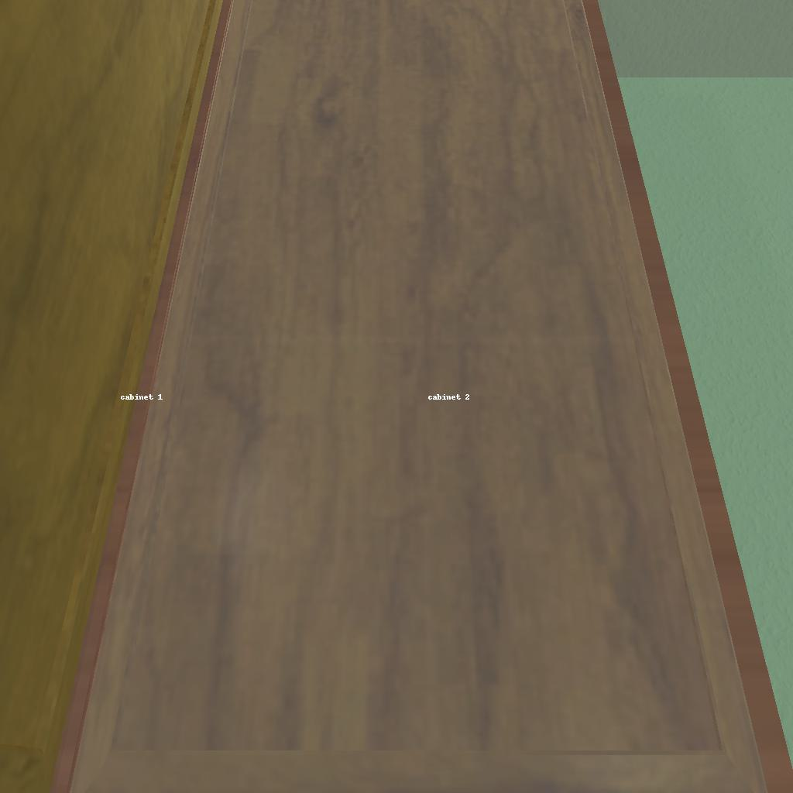

---------------------------------------------------------task: 24---------------------------------------------------------
--------------------------------------------------------------------------------------------------------------------------------------------------------------------
--------------------------------------------------------------------------------------------------------------------------------------------------------------------
Step:--------------------------------------------------------------------------14-------------------------------------------------------------------------------
----------------------------------------
VLM Prompt:
Image1:
Image2:
**Instruction**
1. Analyze the provided image to identify all visible household objects, focusing on those relevant to the task description "put a hot tomato in fridge."
2. Use the analysis of the image and the task hint "The agent must find an object of the desired type, pick it up, go to a microwave, heat the object with the microwave, then find the correct location to place it, and put it down there. The agent does not need to use the microwave button or open the microwave to heat the object, and the agent just needs to do action that is "heat the object with the microwave"." to answer the question: what is the most reasonable action in the choices for the task description "put a hot tomato in fridge"?
4. Decide and write the answer using the template: The answer is: (i): , where i is the real number. If there is no desired object in the image, search every place based on **Initial Observation** to find the object. And if no one is exactly correct, choose a similar answer.
**Initial Observation**
You are in the middle of a room. Looking quickly around you, you can see cabinet (1-14), countertop (1-2), microwave (1), drawer (1-5), sink (1), sinkbasin (1), coffeemachine (1), stoveburner (1-4), toaster (1), fridge (1), diningtable (1), garbagecan (1), safe (1)
**Answer Choices**
(1): go to countertop 1
(2): go to cabinet 4
(3): go to cabinet 5
(4): go to microwave 1
(5): go to cabinet 6
(6): go to drawer 1
(7): go to drawer 2
(8): go to drawer 3
(9): go to cabinet 7
(10): go to cabinet 8
(11): go to sink 1
(12): go to sinkbasin 1
(13): go to coffeemachine 1
(14): go to cabinet 9
(15): go to cabinet 10
(16): go to drawer 4
(17): go to cabinet 11
(18): go to stoveburner 1
(19): go to stoveburner 2
(20): go to stoveburner 3
(21): go to stoveburner 4
(22): go to cabinet 12
(23): go to toaster 1
(24): go to drawer 5
(25): go to countertop 2
(26): go to fridge 1
(27): go to cabinet 13
(28): go to cabinet 14
(29): go to diningtable 1
(30): go to garbagecan 1
(31): go to safe 1
(32): open cabinet 3
(33): close cabinet 3
(34): examine cabinet 3
**Answer**
Let's think step by step by following the instructions.
----------------------------------------
----------------------------------------
Original Response:
Firstly, the agent needs to find a tomato, which would typically be stored in a fridge or a cabinet where food is kept. Based on the Initial Observation, the most likely places to find a tomato would be in the fridge (1) or one of the cabinets.
The agent then needs to heat the tomato with the microwave. Since the agent doesn't need to use the microwave button or open the microwave to heat the object, the agent just needs to do the action that is "heat the object with the microwave." Therefore, the agent must go to the microwave (1).
Finally, after heating the tomato, the agent needs to put the hot tomato in the fridge (1).
Based on the above analysis, the most reasonable actions in sequence for the task description "put a hot tomato in fridge" would be:
- Find and pick up a tomato from the fridge (1) or a cabinet where food is likely stored.
- Heat the tomato with the microwave (1).
- Put the hot tomato back in the fridge (1).
Since the images provided do not show a fridge or a tomato, we must rely on the Initial Observation to find the objects.
The answer is: (26): go to fridge 1.
----------------------------------------
----------------------------------------
>>> Refine Original VLM Response and Get Pure Action: go to fridge 1
----------------------------------------
-----------------------------------------------------------------
Running time: 14.010364055633545 seconds
Total Money: 12.102940000000004
-----------------------------------------------------------------
-----------------------------------------------------------------
Text Observation:You arrive at loc 28. The fridge 1 is closed.
-----------------------------------------------------------------
UNSUCCEED